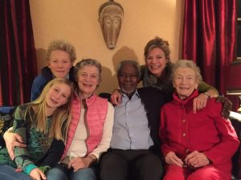
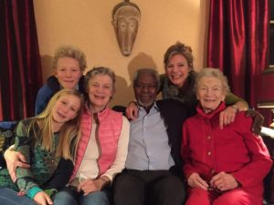
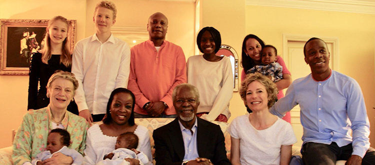
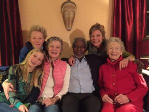

family gallery...
Kofi A. Annan was the 7th Secretary-General of the United Nations and was the founder and chair of the Kofi Annan Foundation. In 2001, he and the United Nations were jointly awarded the Nobel Prize for Peace. Kofi Annan was praised for being “pre-eminent in bringing new life to the organization.” (Norwegian Nobel Committee, October 2001). He died in 2018 after a short illness.
Kofi Annan was born in Kumasi, Ghana, on 8 April 1938. He is married to Nane and between them they have three children and five grandchildren. He died on the 18th of August 2018 at the age of 80 in hospital in Bern, Switzerland, after a brief illness. He had been active in his Foundation’s work right up to his unexpected end
Today, buoyed and comforted by the outpouring of love and support we have received from around the world, we are richer for having shared him with you. Stubborn optimist that he was, he would want us all to look forward with hope, and keep striving to create a freer, fairer, more peaceful world.we lost a brother, a husband, a father, a grandfather, and an uncle – a man of deep conviction who was as committed to instilling the values of fairness, integrity, kindness, and service in each of us, as he was to advocating for peace and human rights around the world.

family gallery...
if you would like to know more about Kofi Annan and his achievements click here...
you can also follow his wikipedia page here...